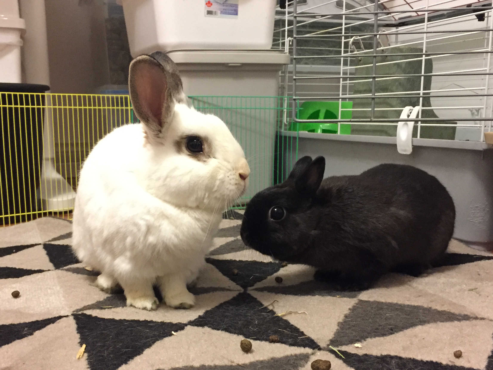

Jonathan Chan
GitHub | LinkedInHi!
I'm a Computer Science student at the University of British Columbia doing second degree program. I have a background in Biochemistry. Cybersecurity is a area that particularly interests me and I hope learn more about it. I'm currently exploring uses of Computer Science in Chemistry.
In my free time I'm into powerlifting and playing the guitar poorly.
Projects
Conformer Counter
- A python script that determines whether a methylcyclohexane is axial or equatorial.
- Will determine the ratio of conformers in the oddly specific scenario that you have thousands of
methylcylcohexane molecules in a .gro file.
Linear Progression Training Program
- Like 5x5 programs? Well don't let Mehdi know, because I've just stolen his training protocol.
- Save and load your progress and generate new workout plans..
Computational Chemistry Tools

- A set of python scripts that convert files so that the poor undergrad doesn't have to!
- Can turn multiple files into jobs for a given job setting.
- Will extract the data to .csv format for you.
- Gives you useful error messages.
- Frees you from relying on clunky Gaussian GUI.
Photo Gallery

These were my two bunnies Prince and Heather.
Blog
These were my two bunnies Prince and Heather.